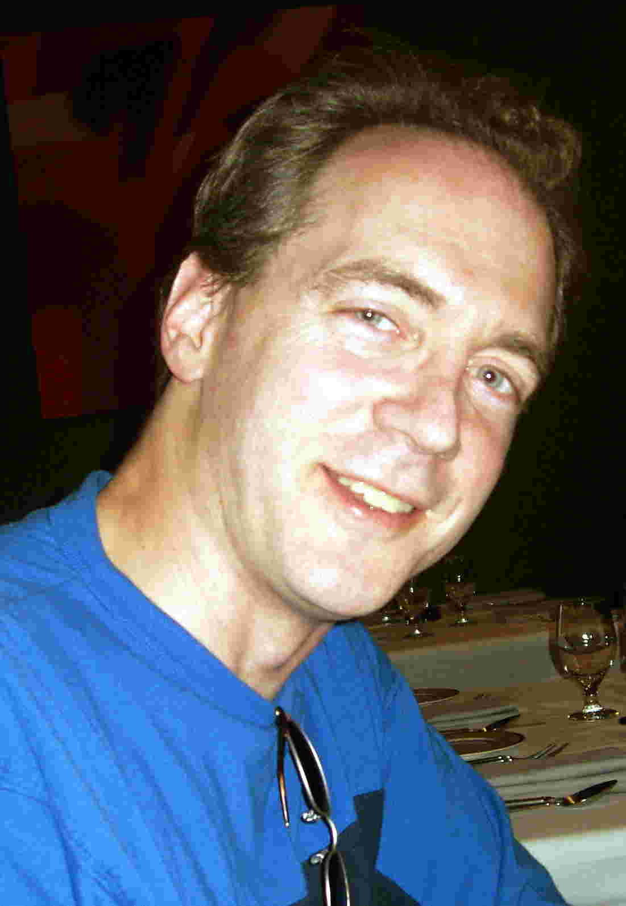

|
 |
John Kunze is an Identifier Systems Architect at the California Digital Library. With a background in computer science and mathematics, his current work focuses on general identifier resolution, ARK identifiers, data citation, creating long-term durable references using the EZID service and the N2T resolver, publishing tabular datasets, and promoting lightweight metadata standards (Dublin Core "Kernel" metadata and the YAMZ crowd-sourced dictionary). His work has been supported by National Science Foundation, the Library of Congress, the Gordon and Betty Moore Foundation, and Microsoft Research. Previously, he contributed heavily to the standardization (RFC's, NISO specifications) of URLs, Dublin Core metadata, and the Z39.50 search and retrieval protocol. In an earlier life he created UC Berkeley's first campus-wide information system, which was an early rival and client of the World Wide Web. Before that he was a BSD Unix hacker whose work survives in today's Linux and Apple systems. |